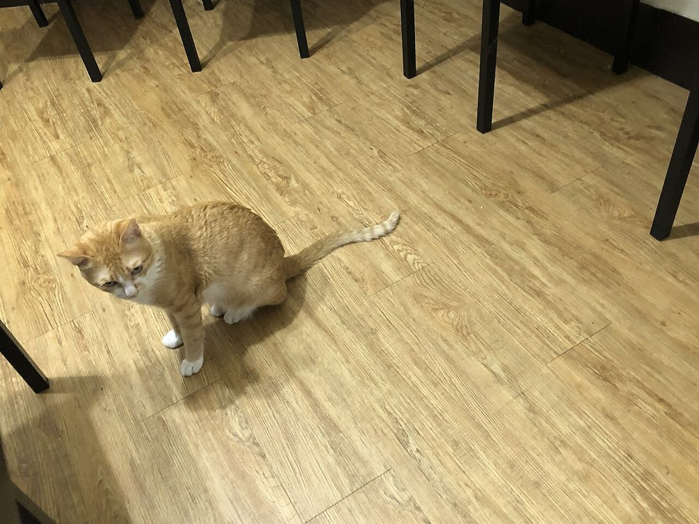
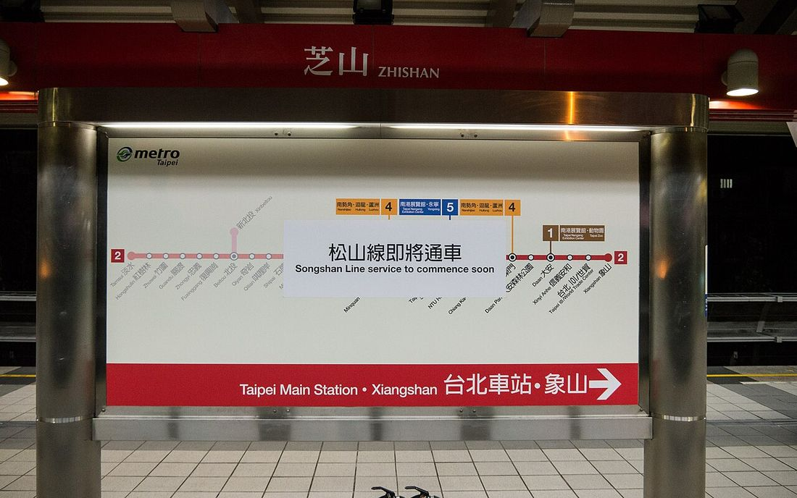
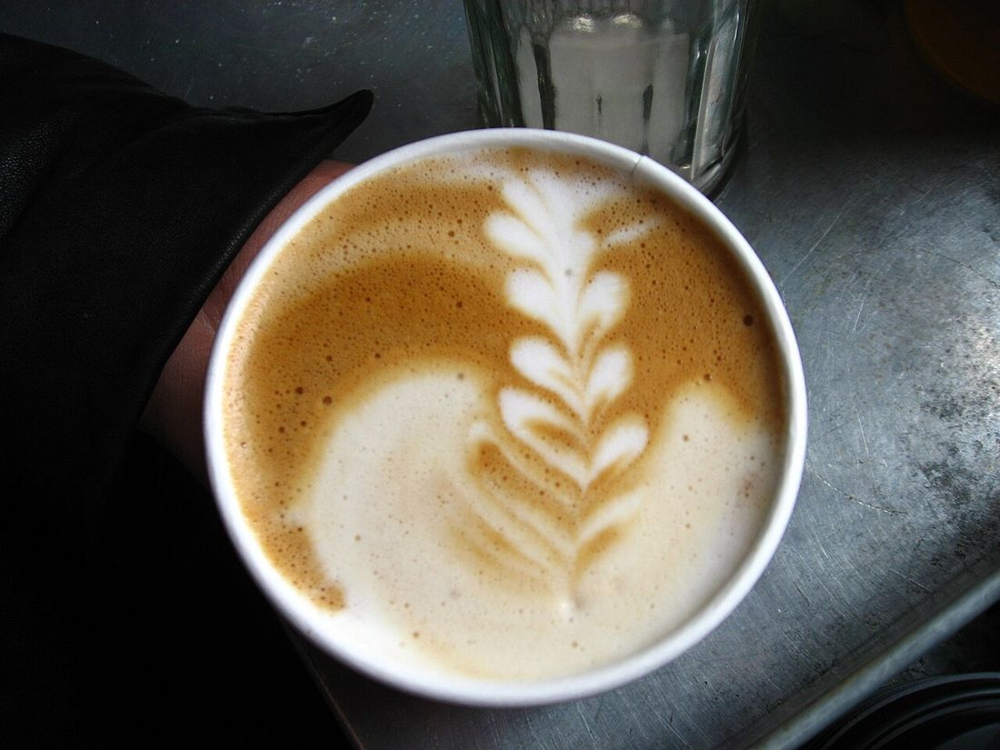

台北老店．天母、士林與民生社區
小貓花園
全世界還在營業、最老的貓咖啡，不在日本，在台北士林。

一九九八年，五隻貓
一九九八年，小貓花園在芝山站附近開張。店家把從街上救回來的貓帶進店裡，一開始只有五隻。剛開幕生意很冷清，直到電視報導，客人才慢慢上門。
從台北到大阪
二〇〇三年，日本旅遊網站做了台北貓咪專題，吸引日本觀光客來朝聖。
二〇〇四年，大阪開了日本第一家貓咖啡，之後貓咖啡在日本流行起來。
不過店家自己說，他們不是世界上第一家讓貓進咖啡館的店。
金氏世界紀錄
二〇二二年，金氏世界紀錄認證小貓花園是「全球現存最老的貓咖啡」。認證時，店裡有 12 隻貓、2 隻狗和 1 隻鳥。
專業點：奶泡溫度
・熱奶泡建議打到 55–65°C
・超過 68°C，牛奶蛋白質會被破壞
・可能出現蛋腥味，奶泡變鬆散，拉花不漂亮
老照片與街景



店家資訊
- 店家
- 小貓花園
- 地點
- 台北市士林區福華路129號1樓（芝山站附近）
- 現況
- 營業中
- 營業時間
- 常有變動，出發前請再確認
- IG 影片
- 1/8 上片
你去過貓咖啡嗎？是去喝咖啡，還是去看貓？
到 IG 留言告訴我們
到 IG 留言告訴我們